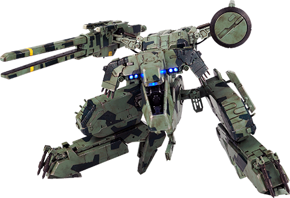
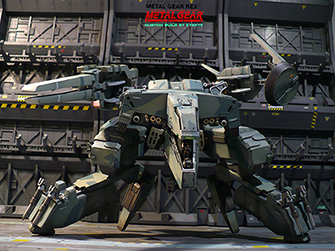
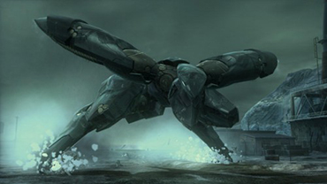

Metal Gear REX es un prototipo de Metal Gear que fue desarrollado en conjunto por DARPA y ArmsTech Inc para el ejército de los Estados Unidos a principios de la década de 2000.
La Unidad REX cuenta con blindaje virtualmente impenetrable y un diseño que le permite adaptarse a prácticamente cualquier terreno gracias en particular a la forma de sus patas, al contar con ese tipo de blindaje que lo hace invulnerable el tripulante queda imposibilitado para ver por tanto recibe todos los datos del exterior por medio de sensores colocados en un disco receptor exterior que se encuentra en la parte superior izquierda de la unidad, lo cual es su vez una “debilidad” impuesta a propósito por su diseñador, si el disco se ve inutilizado el tripulante quedaría ciego al exterior y se vería forzado a abrir la cabina quedando así vulnerable.
El armamento de REX consiste en un par de ametralladoras de alto calibre, un cañón láser y misiles antitanque de mediano alcance y su principal arma ofensiva es un "cañón de raíl" (o "railgun") que es capaz de lanzar un proyectil (en este caso una cabeza nuclear) a prácticamente cualquier parte del mundo por medio de fuerza magnética generada en si misma y por tanto sin ayuda de químicos de ningún tipo que permitirían su detección, siendo así capaz de lanzar un ataque nuclear indetectable y por tanto imposible de interceptar a cualquier parte del planeta.
La compañía ArmsTech al verse en dificultades presiona para mover el proyecto Metal Gear REX bajo el “presupuesto secreto” del gobierno estadounidense para tener libertad de desarrollar y más capital que no tendría que justificar, y con ayuda de DARPA en especial de Donald Anderson desarrollan la unidad REX en una planta de desechos nucleares en la isla de Shadow Moses, Alaska. El jefe de Ingenieros encargado de desarrollarla Hal Emmerich (quien posiblemente se baso en planos y conceptos mandados a su padre por Granin en 1964) fue engañado bajo la premisa de que REX seria utilizado con propósitos defensivos, interceptando misiles y dado que el armamento fue creado y montado en departamentos separados no se dio cuenta de la verdad, hasta que durante lo que seria una prueba, REX y la base son secuestrados por miembros de FOXHOUND bajo el mando de Liquid Snake. Durante la trama del Metal Gear Solid, Liquid Snake logra manipular a Solid Snake para que consiga activar las cabezas nucleares y así utilizar la unidad para sus fines. Casi al final de la misión Solid Snake con ayuda de Gray Fox y gracias a los datos proporcionados por Hal Emmerich logra dañar a REX hasta dejarlo inservible. Sin embargo, tras la destrucción del Metal Gear, Frank Jaeger facelle siendo aplastado por el tanque.
Tras el final del juego se sabe que Revolver Ocelot filtra los planos de REX al mercado negro tras lo cual comienzan a proliferar diversas versiones y variantes de REX lo cual provoca que varias naciones comiencen su propio programa Metal Gear.
|

Metal Gear REX |

Metal Gear RAY |
||||
|---|---|---|---|---|---|
| Armadura | Blindaje Virtual Diseño adaptativo |
Nula vibilidad Vista a través de sensores |
Sensor en forma de disco Debil a impactos |
Unidad Anfibia Diseñada para todo |
Aleación de titanio y ceramica músculos sintéticos y reparable como uno organico |
| Armas | Ametralladoras de alto calibre | Cañón laser y un "cañón de raíl" (o "railgun") | Misiles antitanque de mediano alcance | Ametralladoras de alto calibre, misiles de mediano alcance, bombas en la espalda, lanza misiles de corto alcance al lado de las piernas, cañón que lanza agua | |
| Semejanza | Dinosaurio | Manta raya | |||
| Portador de Cabezas Nucleares | Sí | No, se encarga de cazar unidades Metal Gear | |||